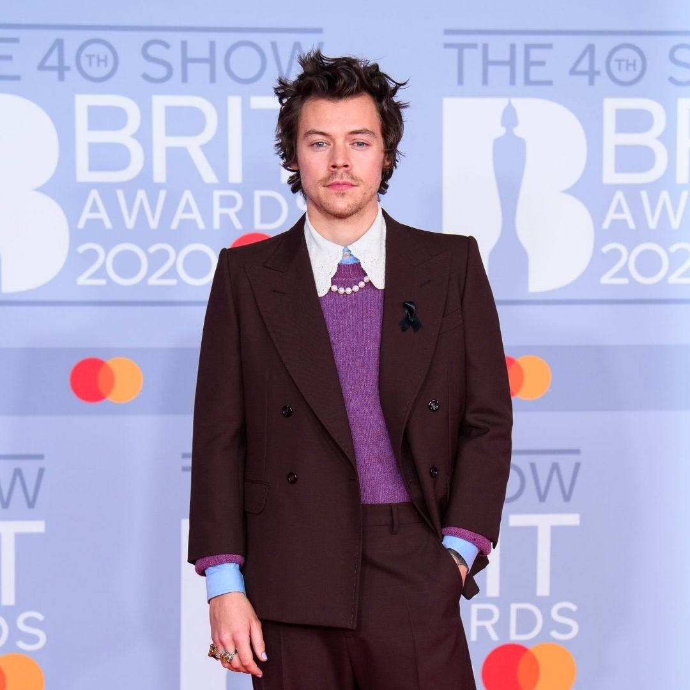
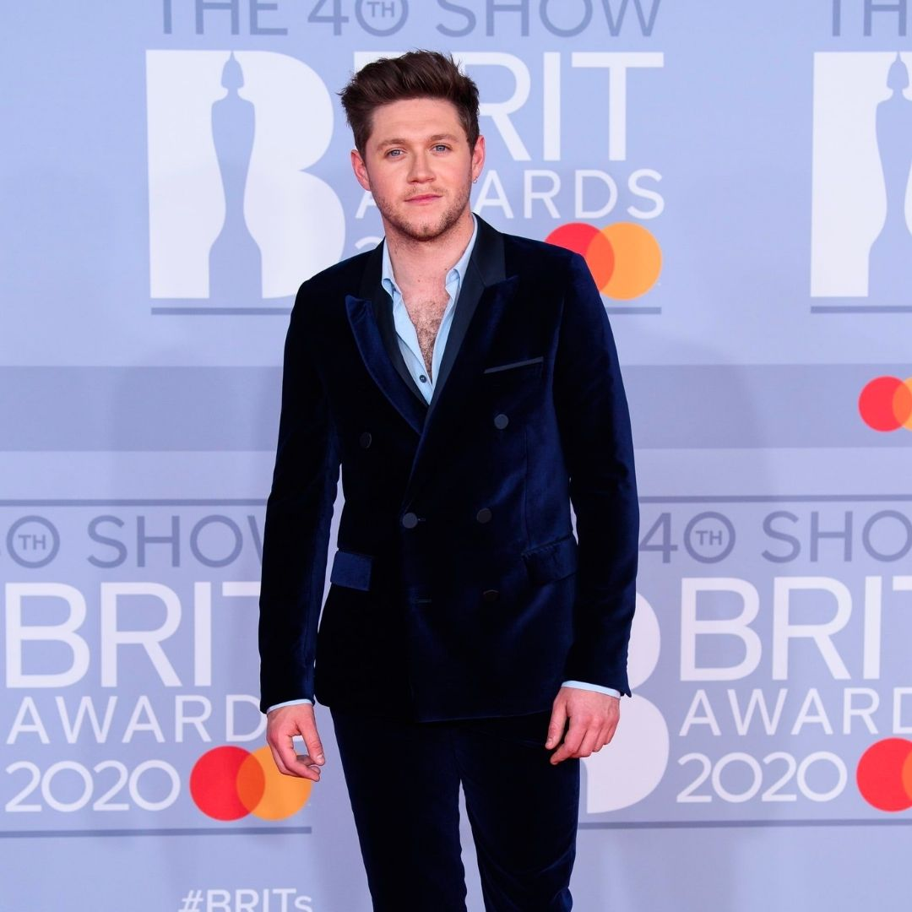
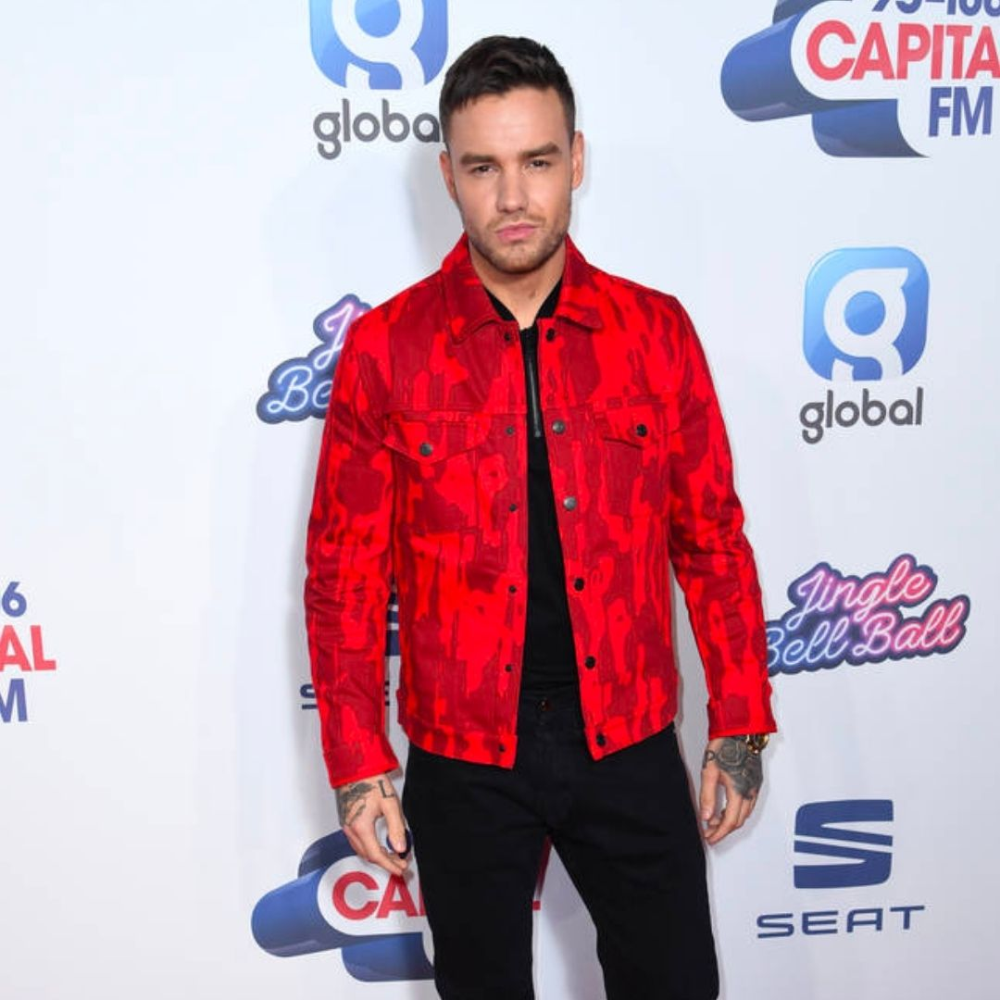
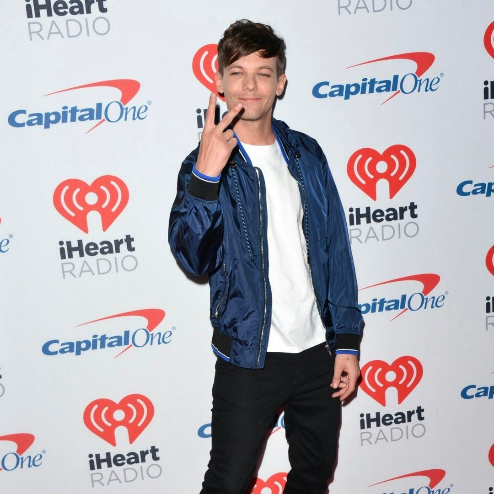
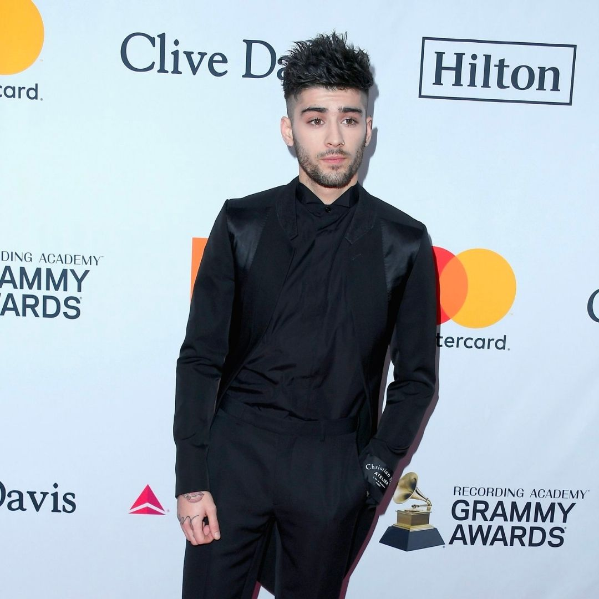

Harry Styles
Harry Edward Styles lahir pada 1 Februari 1994 di Cheshire, Inggris. Ibunya bernama Anne Cox dan Ayahnya bernama Des Styles. Pada umur 7 tahun, orang tuanya bercerai dan Ibunya menikah lagi dengan Robin Twist. Harry juga memiliki kakak perempuan bernama Gemma.
Harry merupakan penggemar Elvis Presley. Ia mengaku mulai menyukai musik karena Elvis Presley. Harry juga merupakan penggemar Coldplay, Foster The People, dan Kings of Leon serta The Beatles. Sebelum bergabung dengan One Direction, Harry pernah menjadi vokalis di sebuah band independen bernama White Eskimo dan memenangkan kompetisi band lokal di Cheshire.
Harry mengikuti audisi sebagai kontestan solo di seri kompetisi bernyanyi Inggris The X Factor pada tahun 2010, dimana dia dan empat kontestan lain ditempatkan dalam satu grup untuk membentuk One Direction.

Niall Horan
Niall James Horan lahir pada 13 September 1993 di Country Westmeath, Irlandia. Ibunya bernama Maura Gallagher dan ayahnya bernama Bobby Horan. Pada umur 5 tahun, orang tuanya bercerai. Ibunya menikah lagi dengan laki-laki bernama Chris. Ia juga memiliki seorang kakak bernama Greg.
Saat mengikuti audisi The X Factor, Niall pernah berkata bahwa ia ingin menjadi penyanyi yang terkenal seperti Justin Bieber atau Beyonce dan bisa berkolaborasi dengan musisi-musisi dunia. Niall mengidolakan Frank Sinatra, Michael Buble, Dean Martin, The Eagles, Bon Jovi dan The Script.
Dia mulai terkenal sejak menjadi anggota grup One Direction. Pada tahun 2010, Niall mengikuti audisi sebagai artis solo untuk ajang menyanyi Inggris The X Factor. Setelah tereliminasi sebagai peserta solo, Niall bergabung dengan empat peserta lain untuk membentuk One Direction.

Liam Payne
Liam James Payne lahir pada 29 Agustus 1993 di Wolverhampton, West Midlands, Inggris. Ibunya bernama Karen dan Ayahnya bernama Geoff. Liam memiliki 2 kakak perempuan, Ruth dan Nicola.
Sebelum mengikuti audisi The X Factor musim ke 7 pada 2010, Liam pernah mengikuti audisi The X Factor musim ke 5 pada 2008 saat ia masih berusia 14 tahun. Namun juri mengatakan bahwa ia belum siap dan memintanya untuk berlatih lagi. Liam merupakan mahasiswa City of Wolverhampton College jurusan teknologi musik. Ia juga merupakan penggemar Justin Timberlake dan Gary Barlow.
Liam membuat debutnya sebagai seorang penyanyi ketika mengikuti audisi dari serial televisi Inggris The X Factor pada tahun 2008. Setelah dieliminasi sebagai peserta solo, dia mengikuti audisi lagi pada tahun 2010 dan dimasukkan ke dalam sebuah grup bersama empat kontestan lain untuk membentuk One Direction.

Louis Tomlinson
Louis William Tomlinson lahir pada 24 Desember 1991 di South Yorkshire, Inggris. Ibunya bernama Johannah Poulston dan Ayahnya bernama Troy Austin. Orang tuanya bercerai saat ia masih anak-anak dan Ibunya menikah lagi dengan Mark Tomlinson. Louis memiliki 5 adik, yaitu Georgia Austin, Charlotte, Felicite, serta si kembar Daisy dan Phoebe Tomlinson.
Sejak kecil, Louis sudah beberapa kali muncul di acara televisi dan pernah menjadi figuran di sebuah drama TV dan BBC. Louis sangat mengidolakan penyanyi Robbie Williams. Saat ini Louis Tomlinson menjalin hubungan dengan mahasiswi Manchester University bernama Eleanor Calder.
Pada tahun 2010, dia menjadi anggota dari One Direction setelah dieliminasi sebagai kontestan solo di serial kompetisi menyanyi Inggris The X Factor.

Zayn Malik
Zain Javadd Malik atau biasa disebut Zayn Malik lahir pada 12 Januari 1993 di Bradford, Inggris. Ayahnya bernama Yasser berdarah Inggris-Pakistan dan Ibunya, Tricia Malik berdarah Inggris. Ia memiliki tiga saudara perempuan, yaitu Doniya, Waliyha dan Safaa.
Saat mengikuti audisi The X Factor, Zayn Malik mengaku bahwa ia hanya ingin mencari pengalaman saja. Ia sangat menyukai genre musik R&B atau rap.
Pada tahun 2010, Zayn mengikuti audisi sebagai artis solo untuk serial televisi Inggris The X Factor. Setelah dieliminasi sebagai peserta solo, Zayn dibawa kembali ke kompetisi, bersama dengan Harry Styles, Niall Horan, Liam Payne, dan Louis Tomlinson, untuk membentuk grup yang kemudian dikenal sebagai One Direction. Zayn keluar dari grup ini pada bulan Maret 2015 dan menandatangani kontrak solo dengan RCA Records.